Instagram lets you connect your business account to NexCognit so customers can reach you through Instagram direct messages. This guide walks through the setup flow from Meta for Developers to the final connection in NexCognit.
Important
Important: Before connecting Instagram, you must first complete the Facebook/Messenger integration. Instagram uses the Meta app and Facebook configuration created during the Facebook setup. If Facebook is not connected, the Instagram connection will not work.
Prerequisites
- You have access to Meta for Developers.
- You already have a Meta app for the Facebook Messenger setup flow.
- You have access to the Facebook Page and linked Instagram Business Account that will be used with NexCognit.
Step 1 — Open Meta for Developers
Open developers.facebook.com to continue the Instagram channel setup.
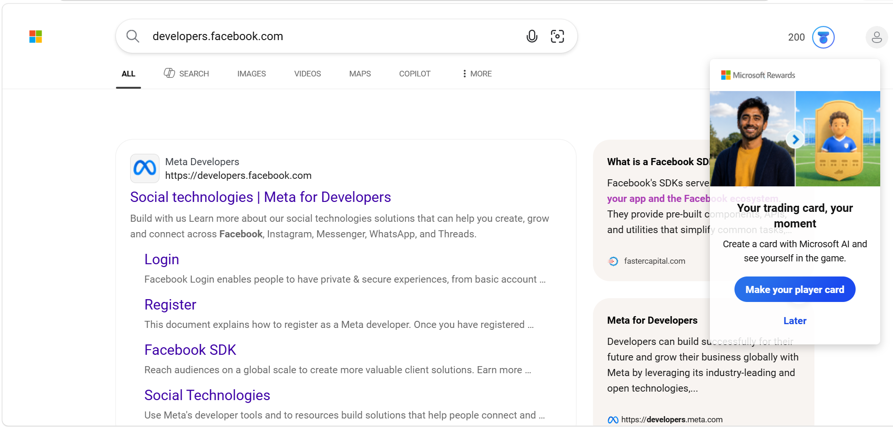
Step 2 — Open My Apps
Open the My Apps section from the top-right area of the Meta for Developers page.
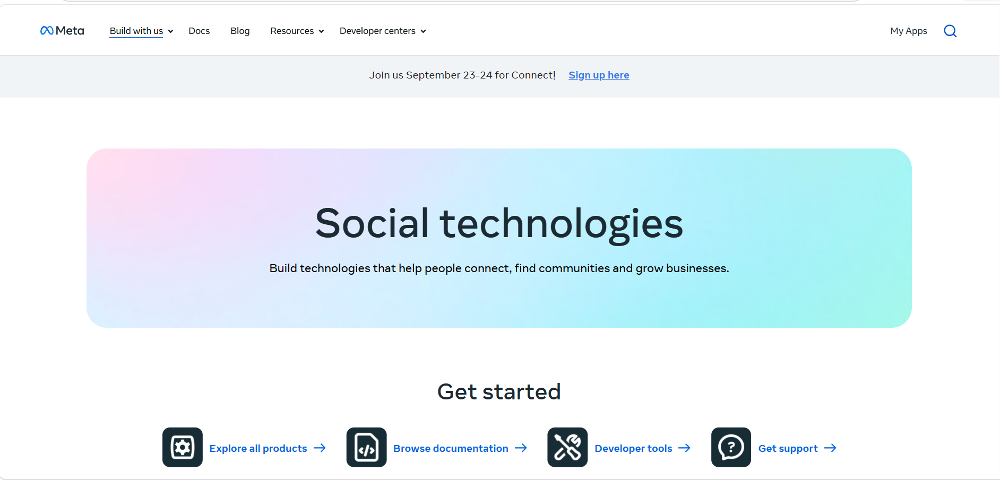
Step 3 — Select the existing Meta app
Select the Meta app that was already created for the Facebook Messenger connection, since the Instagram setup continues from the same app.
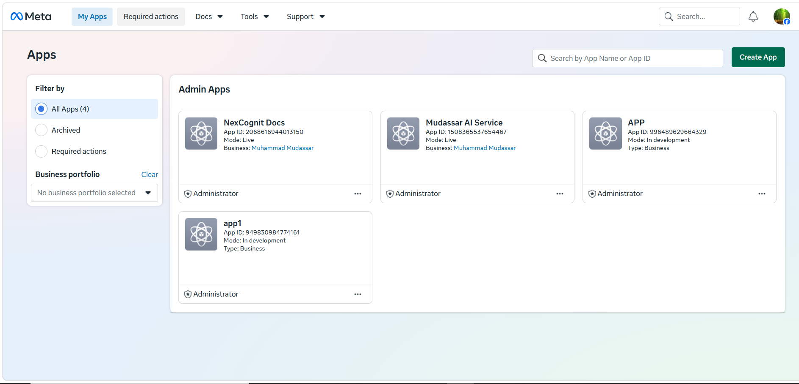
Step 4 — Open Use Cases from the sidebar
Open the Use Cases section inside the selected Meta app.
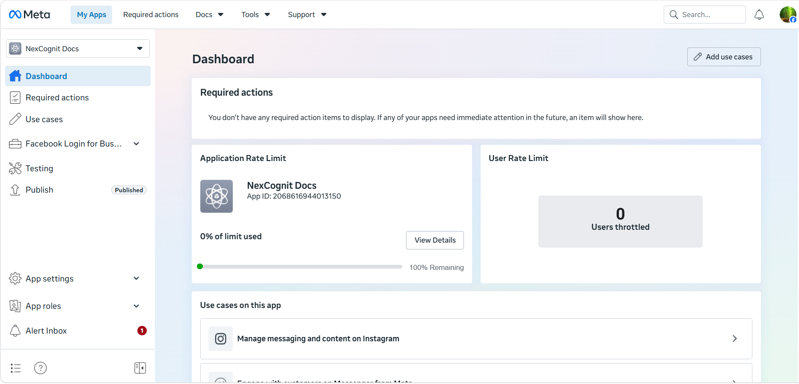
Step 5 — Customize Instagram
Open or customize the Instagram use case inside the Meta app.
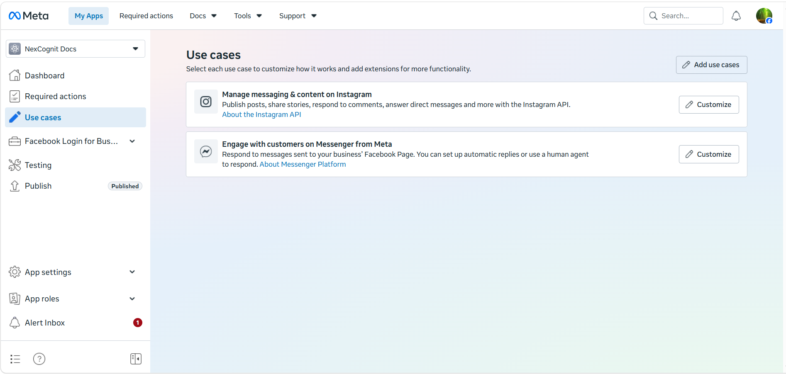
Step 6 — Add the required permission
Add the required permission from the permissions area. This is the permission needed to support the Instagram/Facebook channel connection shown in the setup flow.
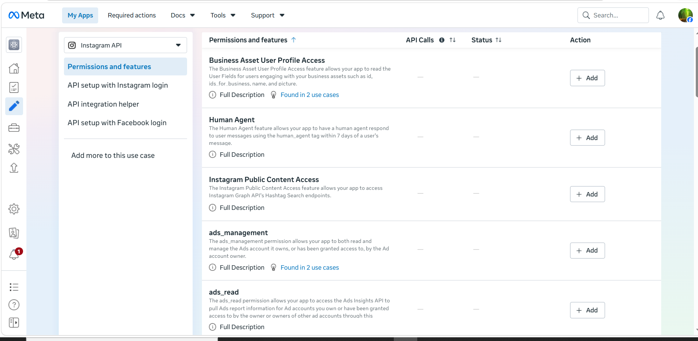
Step 7 — Configure the Instagram Webhook
To receive Instagram Direct Messages, Meta requires a Callback URL and a Verify Token.
Copy the Callback URL below and paste it into the Callback URL field in the Meta Developer Portal.
https://portal.nexcognit.com/webhook/insta-dm
Enter any secure value as your Verify Token. Keep a copy of this value, as the same token must be used whenever Meta asks you to verify the webhook.
After entering the Callback URL and Verify Token, click Verify and Save (or Save, depending on the Meta Developer Portal screen) to apply the webhook configuration.
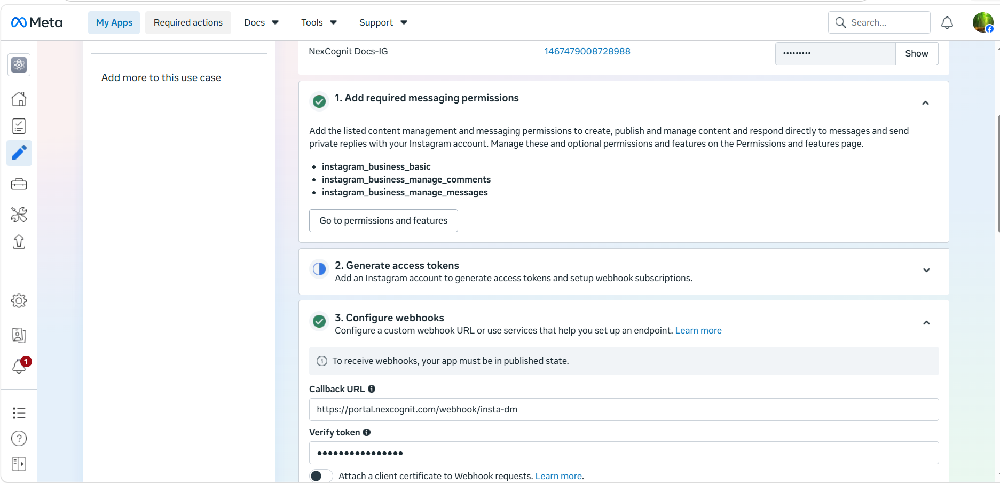
Step 8 — Open Facebook Page settings
Open the settings area of the connected Facebook Page.
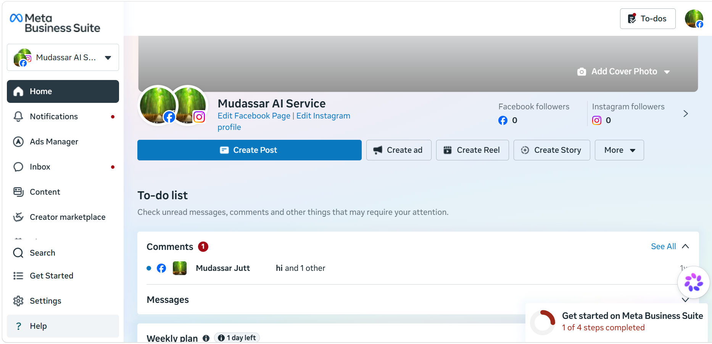
Step 9 — Copy the Instagram Business Account ID
The Instagram Business Account ID can be found from the page’s linked Instagram account settings, and this ID will be needed in NexCognit.
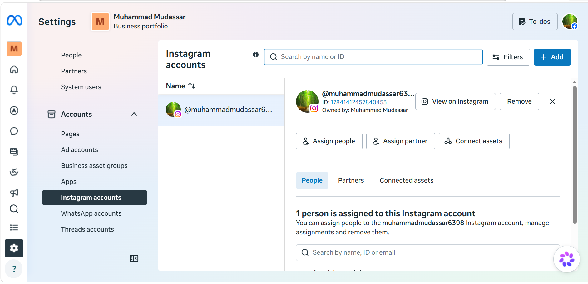
Step 10 — Open the Instagram DM card in NexCognit
In NexCognit, click Channels in the sidebar, then click Set up on the Instagram DM card.
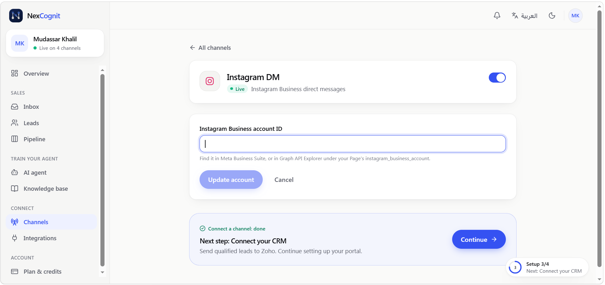
Step 11 — Paste the Business Account ID and connect
Paste the Instagram Business Account ID into NexCognit and complete the connection.
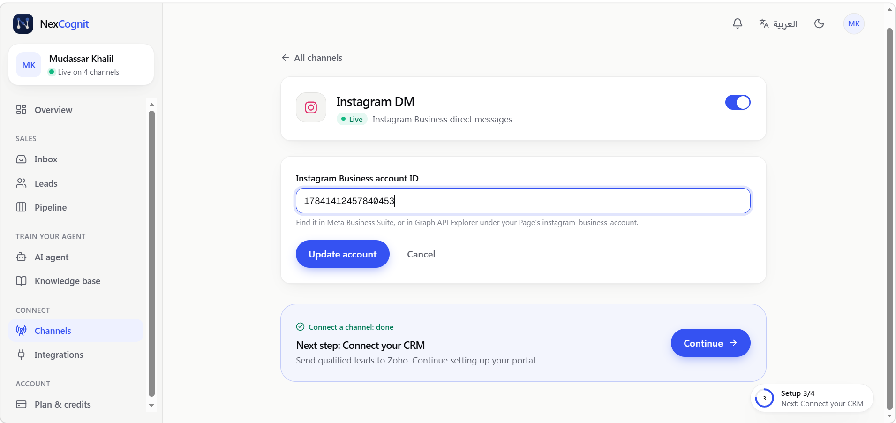
Step 12 — Check that Instagram DM is Live
Go back to Channels and check that the Instagram DM card shows Live with the switch turned on. This means Instagram messages can now reach your agent.
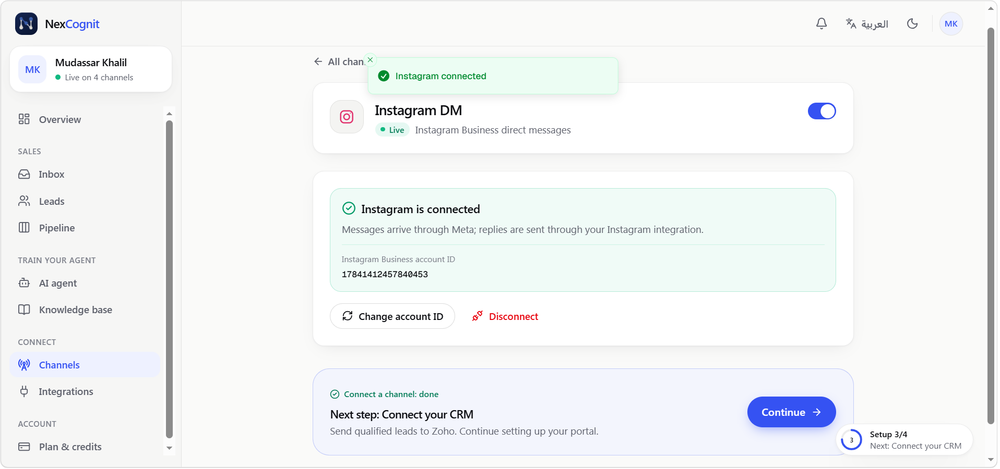
Step 13 — Connect Instagram from Integrations
Instagram also needs a separate outbound connection so NexCognit can send replies back through Instagram Direct Messages. In the NexCognit sidebar, open Integrations, find the Instagram card, and click Connect to begin this second connection.
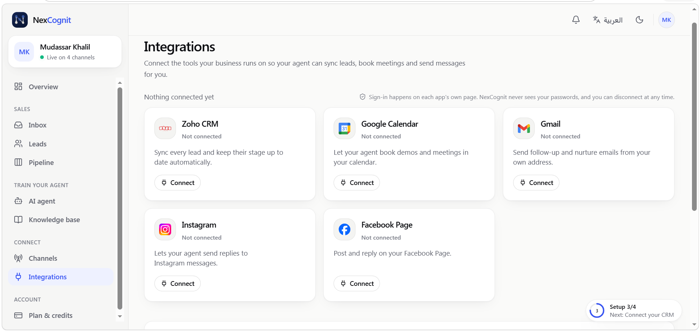
Step 14 — Sign In and Allow Access via Composio
Composio will prompt you to sign in to your Instagram/Facebook account and request permission to access it. Review the request and allow access to continue.
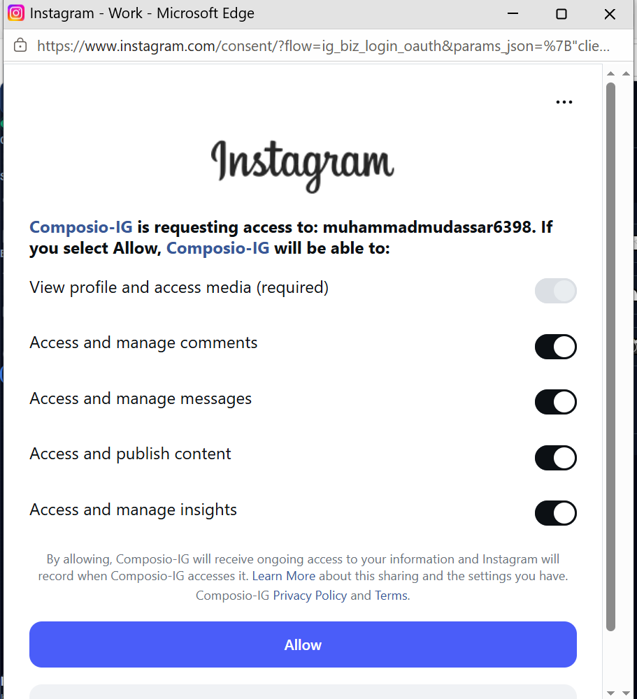
Step 15 — Composio Confirms the Connection
Once access is granted, Composio displays a confirmation that the account was connected successfully.
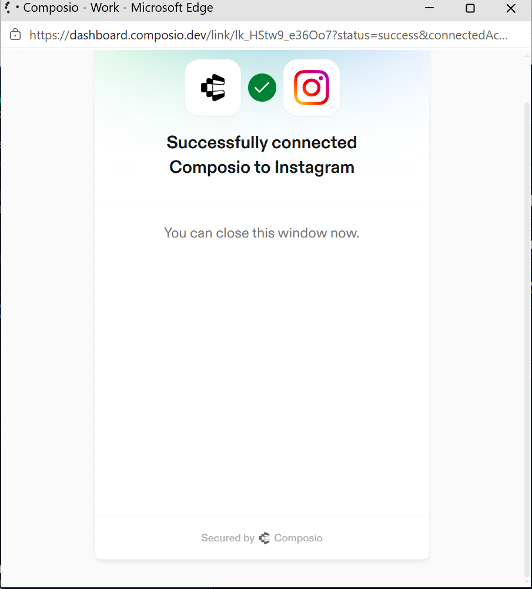
Step 16 — Confirm Instagram shows as Connected
Return to the Integrations page in NexCognit and confirm that the Instagram card now shows Connected. With both inbound and outbound connected, Instagram is fully set up and ready to test.
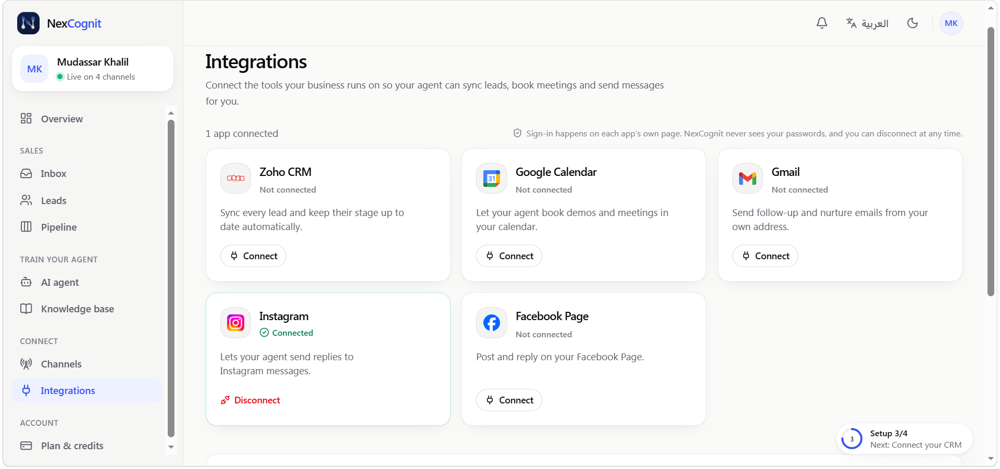
How Instagram works after setup
Once the Instagram channel is connected, customers can start conversations through Instagram direct messages and your agent replies automatically. You can read and reply to those conversations in your Inbox.
Things to know
- Use the same Meta app that was created for the Facebook Messenger flow if that is how your setup is organized.
- Make sure the Instagram Business Account is linked to the correct Facebook Page.
- If the channel does not connect, confirm that the Business Account ID was pasted correctly and that the required permissions are granted.
- Instagram requires both an inbound connection (Steps 1–12) and an outbound connection through Integrations (Steps 13–16). If customers can message in but your agent cannot reply, check that the Instagram card in Integrations shows Connected.